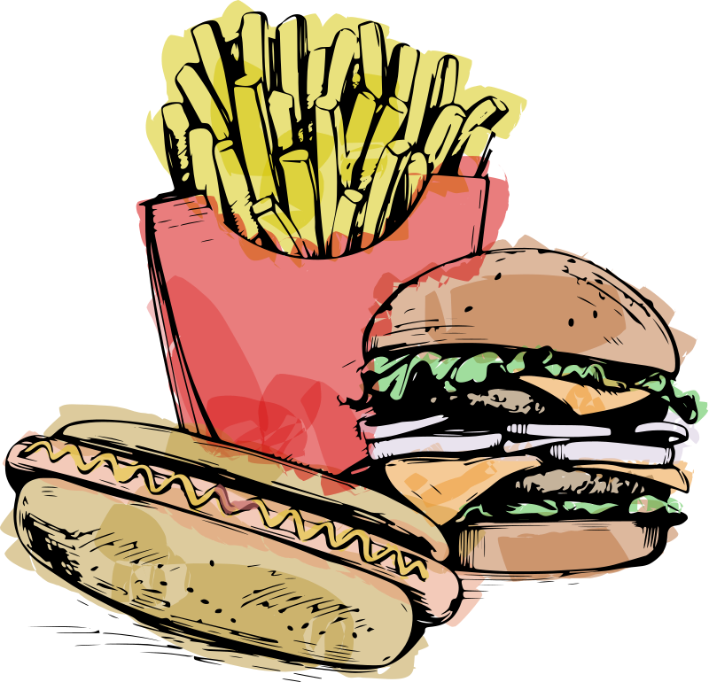

Odin's Recipes
Fast food is prepared and served quickly, typically in a standardized and convenient manner. It is often associated with chain restaurants and typically includes items such as burgers, fries,pizza,fried chicken, and sandwiches. Fast food is known for its speed of service, affordability, and wide availability. However, it is also criticized for its potential health implications due to high levels of calories,unhealthy fats, and additives.


Drinks

Juice is a refreshing beverage made by extracting the liquid from fruits or vegetables. It can be consumed on its own or used as a base for cocktails and smoothies. Juice is known for its natural sweetness, vibrant colors, and nutritional benefits, providing a tasty and hydrating way to enjoy the goodness of fruits and vegetables.